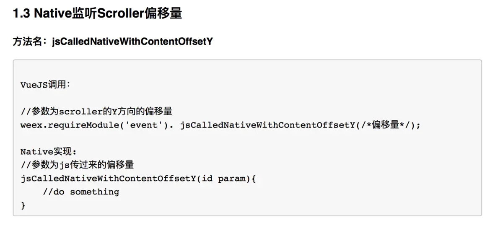

weex(三)weex & Native交互
Tue, Jun 5, 2018
200 Words|Read in about 1 Min|Total Amount of Reading Times
weex与native的交互设计
一：写在前面
在深入使用weex的过程中，发现了不少问题。等以后再和大家分享，今天聊一下weex和native的交互。 weex和native的交互可以大致分为三类，每一类都给大家举个🌰。
具体分类如下。
1. js调用native
2. native调用js
3. js调用native处理完成后回调js
这里所列举的分类有个共同点，就是需要跟写js的同事商量好一套行为准则。具体来说就是需要方法名相同。参数之间也要规定好。后面我会讲到。给一个范例。
ps：我没有太监，只是最近比较忙。
二：js调用native
2.1 情景假设
假设前台同事写好了js代码，代码里面实现了一个listview，native的同事需要知道当页面点击的时候，你点击了哪一个cell/item，需要对应的id去做一些本地的操作。
2.2 具体实现
1.创建一个实现了<WXModuleProtocol>接口的类。
2.在类中实现WX_EXPORT_METHOD(@selector/*你的方法名*/);
3.实现对应的方法。
4.在weex engine init后将该类注册。
2.3 举个🌰
//1.我们首先创建一个类，它实现了接口<WXModuleProtocol>
@interface WeexEventModule : NSObject<WXModuleProtocol>
@end
//2.我们将需要实现的代码暴露出去。
WX_EXPORT_METHOD(@selector(jsCalledNativeGotoProgramDetailWithProgramID:));
//3.实现对应的方法
- (void)jsCalledNativeGotoProgramDetailWithProgramID:(id)object{
/*do something*/
/*object是js同事传过来给你的东西*/
}
//4.在weex engine init的地方注册module，@"event"是组件名。
//js同事可以通过weex.require("event").方法名来调用你定义好的方法
[WXSDKEngine registerModule:@"event" withClass:[WeexEventModule class]]
##三：native调用js
3.1 情景假设：
假设在我们navigationbar上面有个小按钮，点击之后，要告知下方的js界面请求接口刷新数据。
3.2 具体实现
1.调用instance的fireGlobalEvent方法，注册一个事件，参数有两个，第一个是事件名，第二个是传递的参数。
2.在具体的地方出发这个方法即可。
3.3 举个🌰
//1.首先我们创建一个方法。
-(void)refreshWeexPage:(NSNotification *)notif{
NSDictionary * dict = notif.userInfo;
//两个参数，第一个事件名，第二个参数值
[weexInstance fireGlobalEvent:@"geolocation" params:dict];
}
//2.调用这个方法。
//3.前端同事需要实现。
var globalEvent = require('@weex-module/globalEvent');
globalEvent.addEventListener("geolocation",function(e){
//refresh page or do something
});
四：js调用native 再回调js
4.1 情景假设
当js界面create的时候，js告诉我们，一会儿js要去请求数据，需要一些设备信息，什么uuid，什么devicetype，分辨率啊之类的东西。就需要一个这样的过程。即js->native->js。
4.2 具体实现
步骤类似于js->native，稍有不同。
1.创建一个实现了<WXModuleProtocol>接口的类。
2.实现一个含有(WXModuleKeepAliveCallback)的方法。
3.在类中注册WX_EXPORT_METHOD(@selector/*上面提到的方法*/);
4.在weex engine init后将该类注册。
4.3 举个🌰
//按照我们的情景假设。
//1.我们首先创建一个类，它实现了接口<WXModuleProtocol>
@interface WeexEventModule : NSObject<WXModuleProtocol>
@end
//2.实现一个包含WXModuleKeepAliveCallback的方法。
- (void)jsCalledNativeWhenRenderFinished:(NSDictionary *)dict callBack:(WXModuleKeepAliveCallback)callBack{
NSMutableDictionary *dataDict = @[].mutableCopy;
//do something，
//WXModuleKeepAliveCallback 第一个参数是返回给js的数据。
//第二个是发送完消息是否销毁。不销毁的话会一直存在。
callBack(dataDict,NO);
}
//4.在weex engine init的地方注册module，@"event"是组件名。
//js同事可以通过weex.require("event").方法名来调用你定义好的方法
[WXSDKEngine registerModule:@"event" withClass:[WeexEventModule class]]
五：规则约定以及提醒
5.1 规则约定
你可以这样跟前台大哥定义你们的接口。这样的接口文档比较清晰，或许可以减少一点你们的沟通成本。因为无关平台特性，接口定义最好不要出现关于平台特性的代码。比如说iOS的NSString* 和Android的String。写好之后，为开发增加一份约束。Android，iOS 通用即可。

5.2 提醒
- 方法名保持一致
- 事件的处理native端，我用的通知。不知道有没有什么更好的办法。